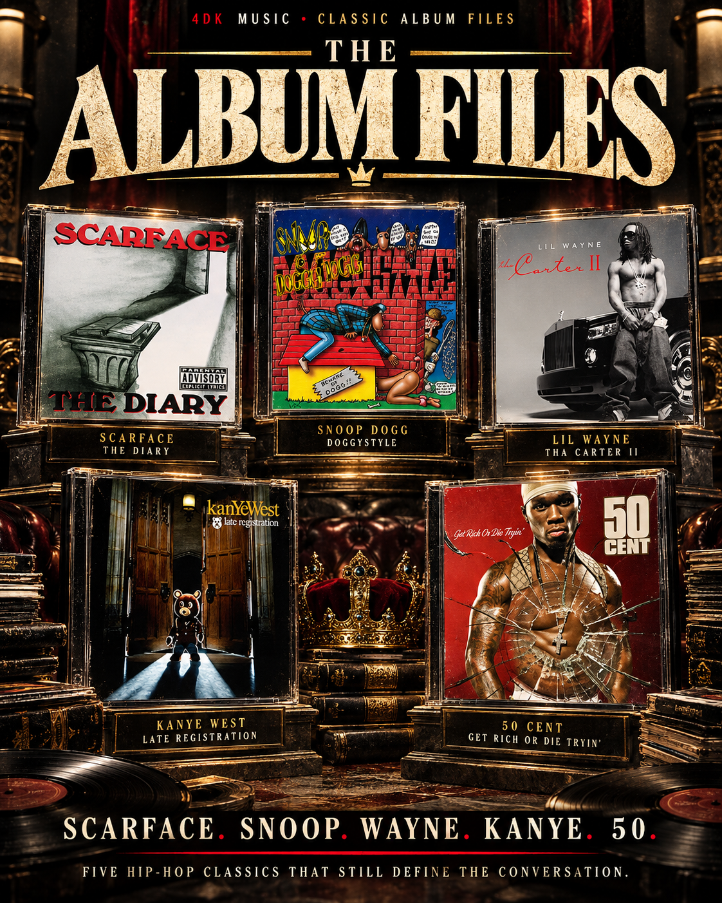
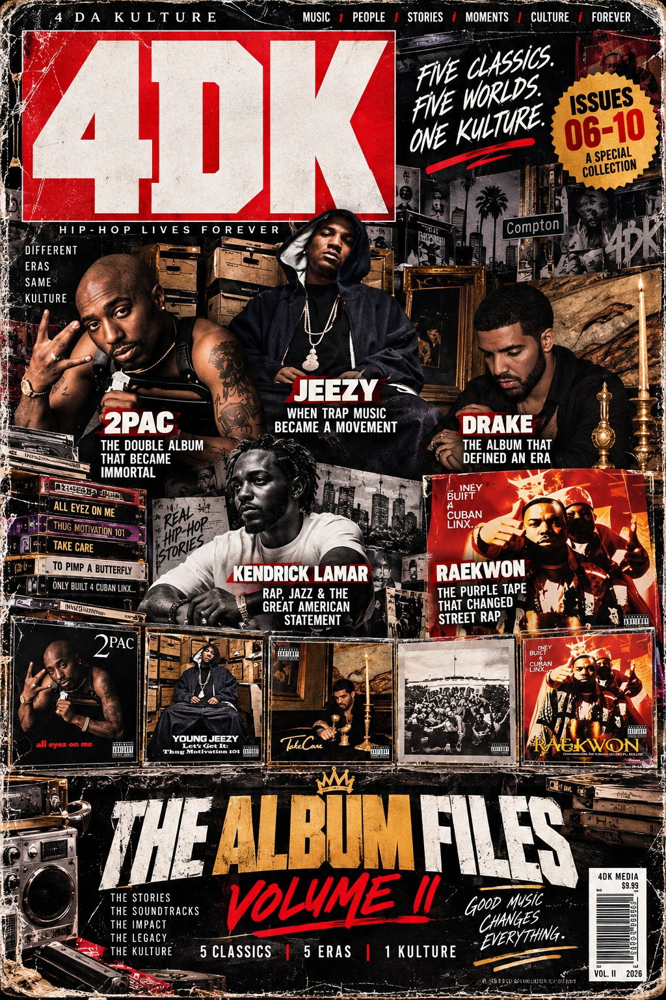
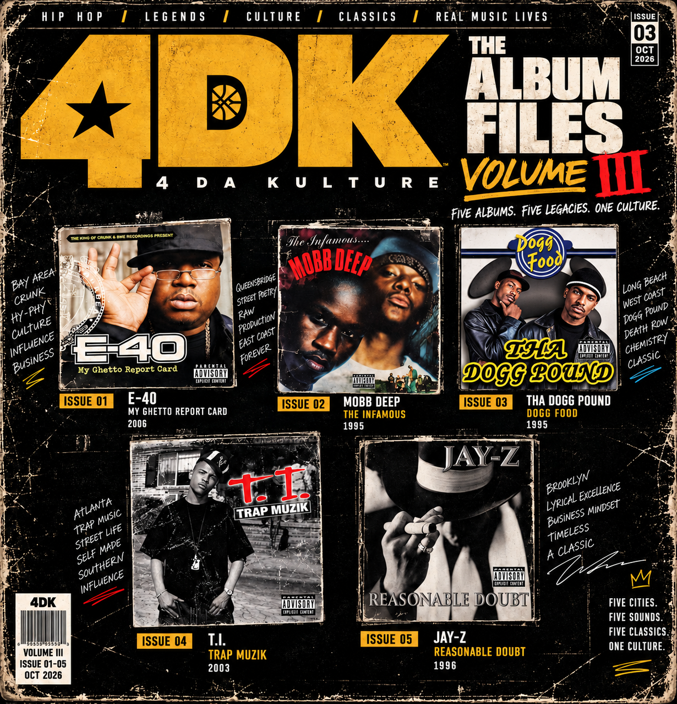

ISSUE 01 · PUBLISHED
THE DIARY
A Houston masterclass in storytelling, vulnerability and survival.
READ THE COMPLETE ALBUM FILE →Five essential albums, five distinct eras, one culture. Our long-form retrospective series: production, songwriting, standout records, influence and what the music means today.

EXPLORE VOLUME TWO ↓All five Volume One features are ready to read. Explore the classics without losing any previous issue.
A Houston masterclass in storytelling, vulnerability and survival.
READ THE COMPLETE ALBUM FILE →The voice, the funk and the West Coast takeover.
READ THE COMPLETE ALBUM FILE →When Wayne became Wayne. Every track, the production shift and the mixtape-era legacy.
READ THE COMPLETE ALBUM FILE →Kanye raised the ceiling: Jon Brion, 2005 rap dominance, and all 21 album selections.
READ THE COMPLETE ALBUM FILE →The underground king became a megastar overnight. All 19 tracks rated. 9.5/10 certified classic.
READ THE COMPLETE ALBUM FILE →Our second collection is complete. Five monumental albums. Five eras. Every deep review preserved — from 2Pac and Jeezy through Drake, Kendrick Lamar and our 9.6/10 Purple Tape grand finale.

The double album that made hip-hop history. Death Row, the Bay Area connection, the hits, deep cuts and all 27 tracks reviewed.
READ THE COMPLETE ALBUM FILE →The album that turned trap into motivation and helped make a regional street sound a national force. The Snowman era, Shawty Redd, the Southern takeover and all 19 tracks get the full 4DK treatment.
READ THE COMPLETE ALBUM FILE →Fifteen years later, the sophomore leap still hits: 40, The Weeknd, Wayne, the rap/R&B blueprint, all 20 records and the album that took Drake into a different stratosphere.
READ THE COMPLETE ALBUM FILE →
Eleven years on, Kendrick's jazz-funk masterpiece still stands apart. Every track discussed, seven 4DK Picks, two perfect 10s and the 2Pac conversation that completes it all.
READ THE COMPLETE ALBUM FILE →The Purple Tape: 18 detailed track essays, five perfect 10s, Rae and Ghost's chemistry, Nas, Cappadonna, the RZA production genius and its cinematic legacy.
READ THE COMPLETE ALBUM FILE →The collection continues: E-40’s Bay Area landmark and Mobb Deep’s Queensbridge classic, both with full track-by-track 4DK reviews.

The album that brought hyphy to a new generation: 20 deep track reviews, Rick Rock and Lil Jon, Keak da Sneak’s rightful flowers, and the 20-year legacy.
READ THE COMPLETE ALBUM FILE →Two 20-year-olds defined a sound. All 16 tracks covered, Havoc’s production legacy, Prodigy’s storytelling and three perfect 10s.
READ THE COMPLETE ALBUM FILE →We go beyond charts, sales and nostalgic scores. The Album Files goes inside the sound, the era, the songwriting and the lasting influence. Each installment builds an archive without replacing the last.